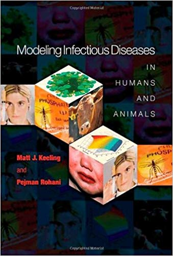
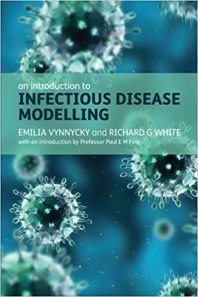
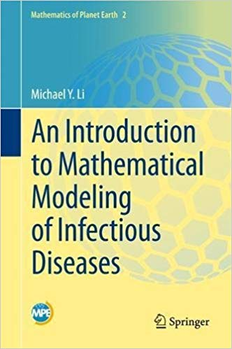
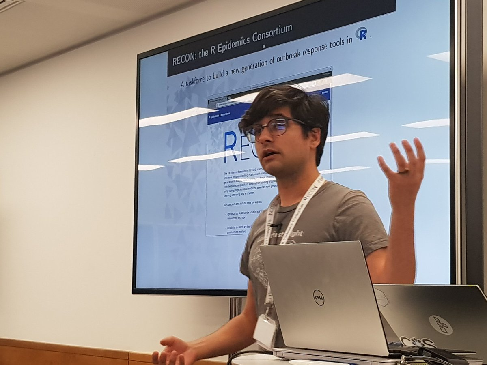
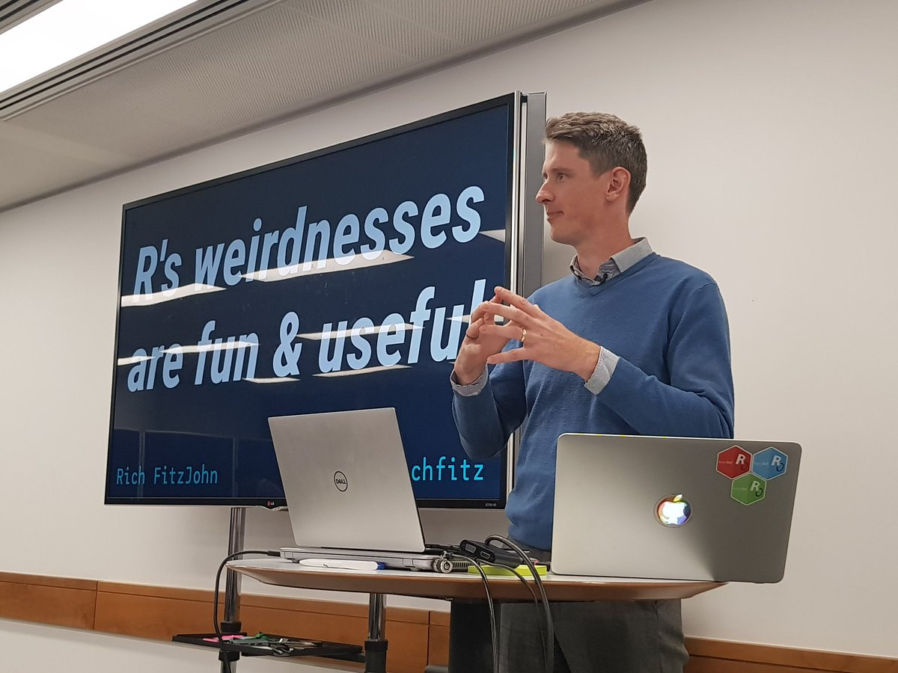
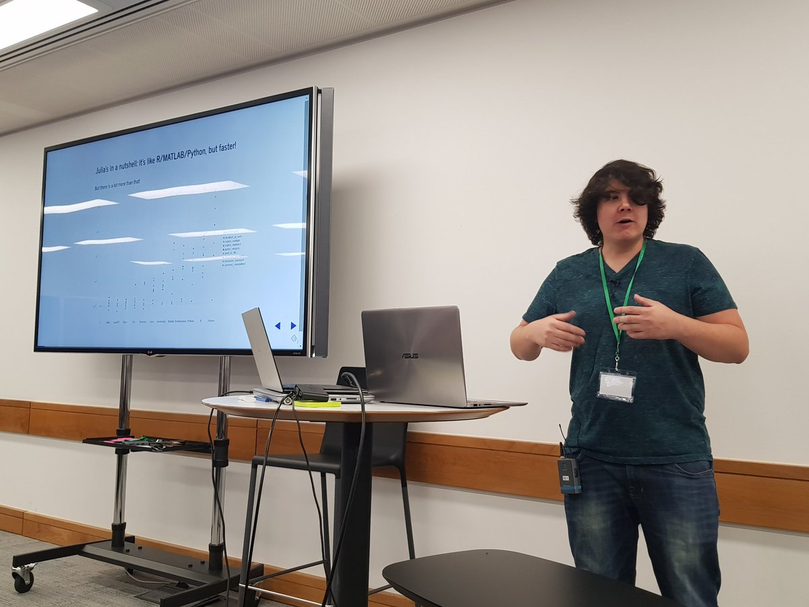
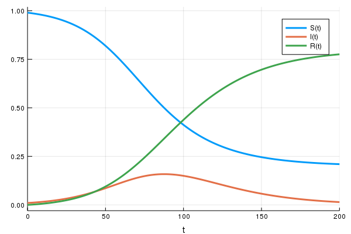
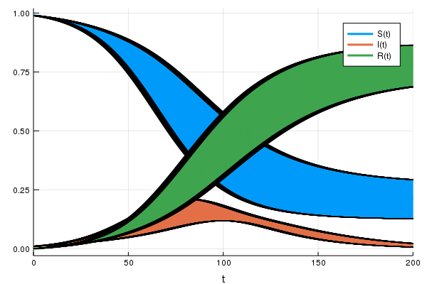
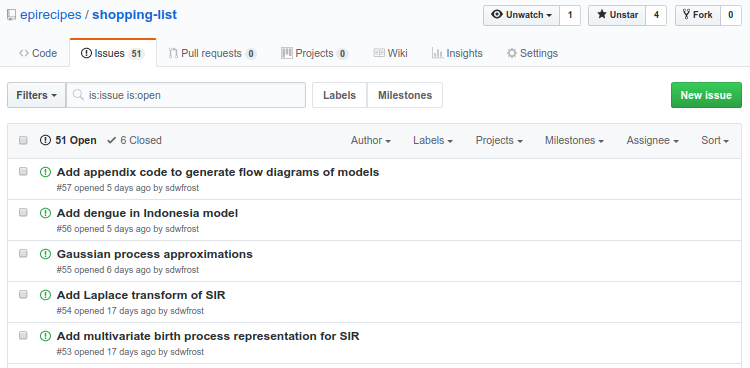

Epirecipes: developing a cookbook of epidemiological models
Simon Frost


Acknowledgements
- Facilitators
- Zhian Kamvar
- Chris Rackauckas
- Rich FitzJohn
- Thibaut Jombart
- James Lester
- Gerry Tonkin-Hill
- Cambridge
- Dr. Allyson Walsh
- Dr. Lydia Drumright
- Prof. James Wood
- ATI
- Jade Thompson
- All the participants of the 2018 meeting
Sponsors


Introduction
- Mathematical models of infectious disease transmission are widely used in research, policy-making etc.
- Field is becoming increasing computational
- Simple to complex models
- Analytical to simulation
- Deterministic to stochastic
- Relatively inexpensive
- Well suited for junior researchers
- Allows contributions from resource-limited settings
- Need capacity building and skill development
Efforts to increase capacity in disease modeling fall short
- Training resources focus on the same, basic building blocks
- Published models are often not ‘open’
- Model building process is hidden
- Details and/or implementation may not be available
- No central resource - models are difficult to discover
- Models are often restricted to a single computer language
- May/may not be the best choice
- Limits extending models by others
- Not ‘plug and play’
- May involve installing an extensive toolchain
Keeling and Rohani (2007)

- Good selection of conceptual models
- Examples mainly in C/C++ and Fortran
- Some in Python
Vynnycky and White (2010)

- Focuses on introductory models
- Examples in MS Excel and Berkeley Madonna
Martcheva (2015)
- Some examples in Matlab
Kiss, Miller & Simon (2017)
- Focuses on network models
- Dedicated library ‘Epidemics on Networks’ in Python
Li (2018)

- Only contains a single example of code for parameter estimation in Matlab
Courses
- There are a number of excellent courses in disease modeling in the UK alone:
- Imperial
- Cambridge
- LSHTM
- Material is often closed
- Typically adopt a single language for practicals
Summary
- Courses and textbooks are limited in their use of examples:
- Number
- Diversity
- Implementation
- Access
- Language
- Publications present ‘state of the art’ models, but may not have an implementation, especially if not recent
- Implementations in commercial packages are not truly ‘open’
Barriers to open models
- High cost of commercial packages
- Matlab: >£200/yr
- Mathematica: c. £1000/yr
- Berkeley Madonna: > £200
- Solution: only use free, open source languages
- Slow internet speeds make installation of toolchains difficult
- Exacerbated by the need to accommodate multiple languages
- Solution: package all tools together in a format that could be used offline
- Exacerbated by the need to accommodate multiple languages
Aims
- To complement existing resources by developing an online ‘cookbook’ of epidemiological models
- Objectives for models
- Illustrate different diseases, ‘tricks’, etc.
- Open source
- Implemented in multiple (free) computer languages
- Can be run via a web browser
What is Epirecipes?
- An initiative to collate implementations of mathematical models of infectious disease transmission
- A platform to allow these models to be run reproducibly
- An online, interactive cookbook that provides background, references, search capacity etc.
- A community of researchers to contribute to the resource
- Hackathons to build momentum in developing material in key areas
The platform
Features of the platform
- Portable: runs on Windows, Mac, and Linux
- Easy to set up a new server
- Can run the platform on a laptop with a small script
Languages in Epirecipes base container to date
- Interpreted languages
- Python, R, Julia, Octave, Scilab, Javascript
- Compiled languages
- C, Fortran, C++
- Computer algebra systems
- Maxima, Pari-GP
- Tools
- XPP-AUT, VF-GEN, LibBi, Gnuplot
Epirecipes packages
- Python
- scipy, pydstool, PyGOM, SimPy, salabim
- R
- deSolve, dde, odin, GillespieSSA, POMP, rbi
- Julia
- DifferentialEquations, Gillespie
- Node
- ode-rk4
- C++
- Boost::odeint
SIR model
- Let’s take the standard ‘susceptible-infected-recovered’ model
\[ \frac{dS(t)}{dt} = -\beta S(t) I(t)\\ \frac{dI(t)}{dt} = \beta S(t) I(t)- \gamma I(t)\\ \frac{dR(t)}{dt} = \gamma I(t) \]
R vs Python
def sir_ode(times,init,parms):
b, g = parms
S,I,R = init
# ODEs
dS = -b*S*I
dI = b*S*I-g*I
dR = g*I
return [dS,dI,dR]
parms = [0.1,0.05]
init = [0.99,0.01,0]
times = np.linspace(0,200,2001)
sir_sol = solve_ivp(
fun=lambda t, y: sir_ode(t, y, parms),
t_span=[min(times),max(times)],
y0=init,
t_eval=times)Why different languages?
- If the differences in syntax are relatively minor, why consider other languages?
- Some are better suited for some tasks than others
- Loops
- The ‘two language’ problem
- Differences in the ecosystem
- You should code in what you like, but it may be necessary to ‘read’ other languages
- Interoperability is actually quite good
- R: reticulate, JuliaCall, XRpython, XRjulia
Hackathons
- Recently held an Epirecipes meeting at The Alan Turing Institute
- Primary aim: implement as many models as possible
- A brief description of the model
- Ideally with equations and links
- A reference implementation in your favourite language
- Ideally with graphical output (if appropriate), a test, and a benchmark
- A brief description of the model
- Secondary aim: capacity and team building
- Provide training sessions
- To provide access to individuals from low-to-middle income countries
Attendance
- 45 participants
- 60% graduate students, 25% postdocs
- 50% female
- 10% from low to middle income countries
Training sessions
  
Julia
- Relatively new language for technical computing
- ‘Combining the high-level productivity and ease of use of Python and R with the lightning-fast speed of C++’ - Alan Edelman
- Well suited for simulation and inference:
- Just-in-time compiled
- Interactive
- Expanding ecosystem for modeling, Markov chain Monte Carlo, machine learning etc.
Benchmarking of a simple discrete-time SIR model
\[ S(t+\delta t) = S(t)-x \\ I(t+\delta t) = I(t)+x-y \\ R(t+\delta t) = R(t)+y \\ x \tilde \rm{binomial}(S,1-e^{-\lambda \delta t}) \\ y \tilde \rm{binomial}(I,1-e^{-\gamma \delta t}) \\ \lambda = \frac{\beta(I+\iota)}{S+I+R} \]
R code
sir <- function(t,u,parms){
with(c(u,parms),{
lambd <- bet*(I + iota)/N
ifrac <- 1.0 - exp(-lambd*dt)
rfrac <- 1.0 - exp(-gamm*dt)
infection <- rbinom(1,S,ifrac)
recovery <- rbinom(1,I,rfrac)
return(list(S=S-infection,
I=I+infection-recovery,
R=R+recovery,
Y=Y+infection))
})
}- Time for 1000 replicates: 7.5s
Python code
def sir(t,u,parms):
bet,gamm,iota,N,dt=parms
S,I,R,Y=u
lambd = bet*(I+iota)/N
ifrac = 1.0 - math.exp(-lambd*dt)
rfrac = 1.0 - math.exp(-gamm*dt)
infection = np.random.binomial(S,ifrac)
recovery = np.random.binomial(I,rfrac)
return [S-infection,
I+infection-recovery,
R+recovery,
Y+infection]- Time: 1.8s
Julia code
@inline @fastmath function sir(t, u, parms, rng)
(S, I, R, Y) = u
(β, γ, ι, N, δt) = parms
λ = β * (I + ι) / N
ifrac = 1.0 - exp(-λ * δt)
rfrac = 1.0 - exp(-γ * δt)
infection = randbn(S, ifrac, rng)
recovery = randbn(I, rfrac, rng)
return (S - infection,
I + infection - recovery,
R + recovery,
Y + infection)
end- Time: 0.03s
DifferentialEquations.jl
- DifferentialEquations.jl is the core differential equation solver package in Julia, with solvers for:
- ODEs
- DAEs
- SODEs, SDAEs
- Discrete stochastic (Gillespie) equations, mixed with ODEs/SDEs (jump diffusions)
- DDEs
- PDEs
- Wrappers to common C++ and Fortran libraries plus native Julia implementations
- See https://github.com/ChrisRackauckas/JuliaAndDiffEq
SIR example
sir_ode = @ode_def SIRModel begin
dS = -β*S*I
dI = β*S*I-γ*I
dR = γ*I
end β γ
parms = [0.1,0.05]
init = [0.99,0.01,0.0]
tspan = (0.0,200.0)
sir_prob = ODEProblem(sir_ode,
init,
tspan,
parms)
sir_sol = solve(sir_prob,saveat=0.1)Automated plotting
plot(sir_sol)
Adding uncertainty
parms2 = [0.1 ± 0.01,0.05 ± 0.005]
init2 = [0.99 ± 0.0,0.01 ± 0.0 ,0.0 ± 0.0]
Models implemented
- ‘Bring your own model’
- Textbooks
- Literature search
- ‘Shopping list’ at https://github.com/epirecipes/shopping-list/issues
Concepts targeted in first meeting
- Deterministic models
- Stochastic (demographic/environmental) models
- Age structured models
- Spatial models
- Network models (edge-based, pair approx.)
- Non-exponential passage times
- Disease-specific models
Final outcomes
- Incorporation of notebooks into https://epirecip.es/epicookbook
- Licensing:
- MIT (code)
- Creative Commons CC-BY 4.0 (text)
- Licensing:
- Group publication:
- Journal of Open Source Education
- F1000 Research
http://epirecip.es/epicookbook
- The cookbook is a ‘Jupyter Book’, originally created by Sam Lau and Chris Holdgraf with support of the UC Berkeley Data Science Education Program and the Berkeley Institute for Data Science
Javascript and Observable Notebooks
- Javascript forms the cornerstone of web-based visualisations
- Can be fiddly to code:
- Multiple languages to deal with (JS, HTML, CSS)
- Asynchronous code
- Observable notebooks offer one solution
- Reactive programming
- Community
- Web platform
- Notebooks are exported as web pages and included in the main cookbook
How you can help
- Post an issue on
epirecipes/shopping-list - Port an existing model
- Add your own model
- Use Epirecipes in teaching/training

Next steps
- First release of the cookbook
- Provide a Digital Object Identifier for citation purposes
- Future hackathons
- More of the same
- Agent based models/discrete event simulations
- Inference
- More scalable backend
Conclusions
- After only a single hackathon, Epirecipes already contains a wide range of models in a variety of languages
- Much to be done!
- Growing the community
Try for yourself
- Main website:
- Cookbook:
- Observable:
- GitHub Repository:
Thanks!